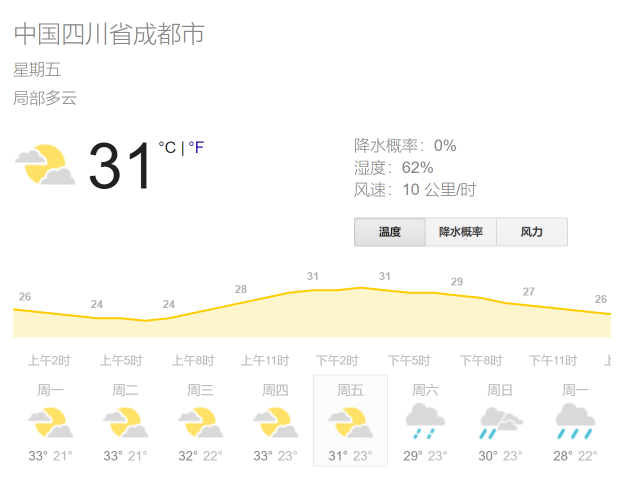
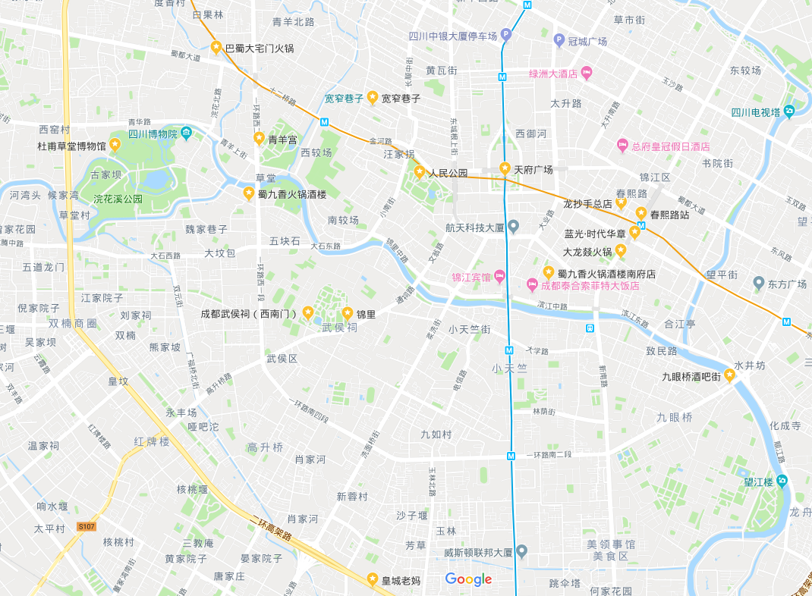
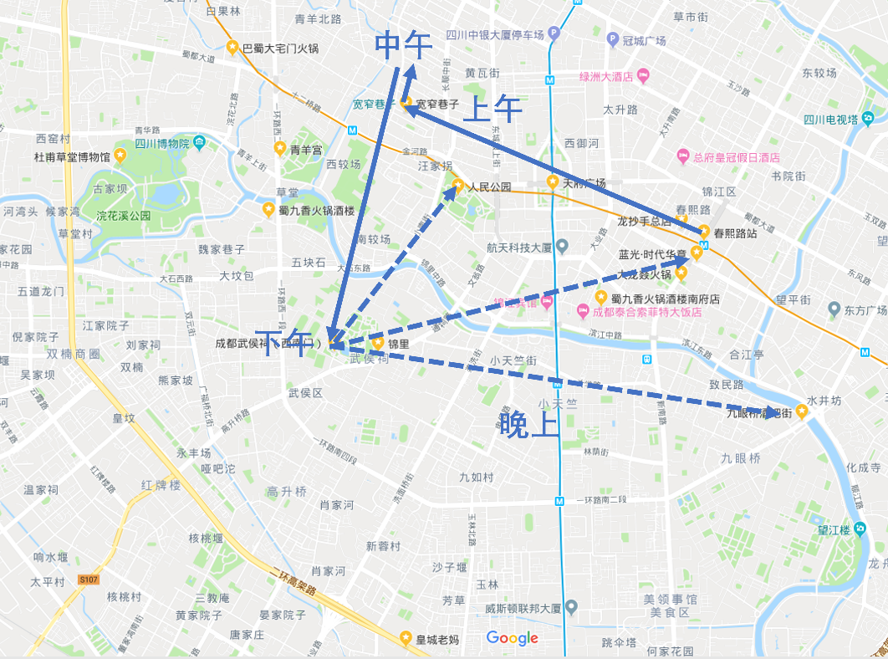
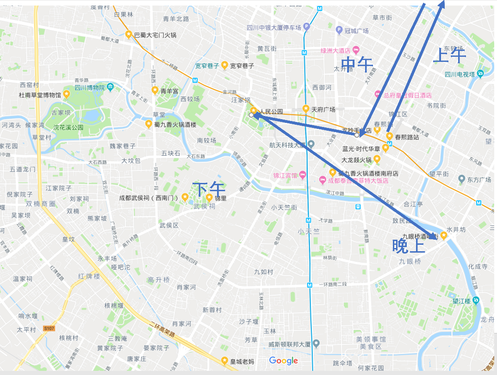
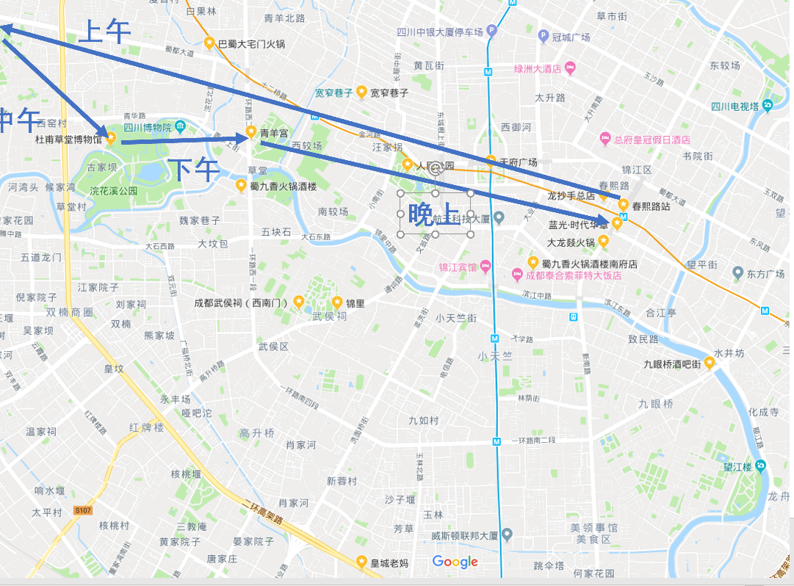
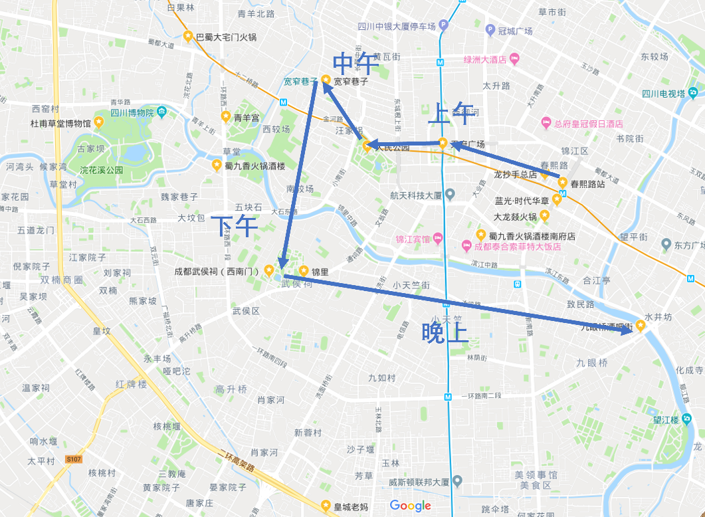
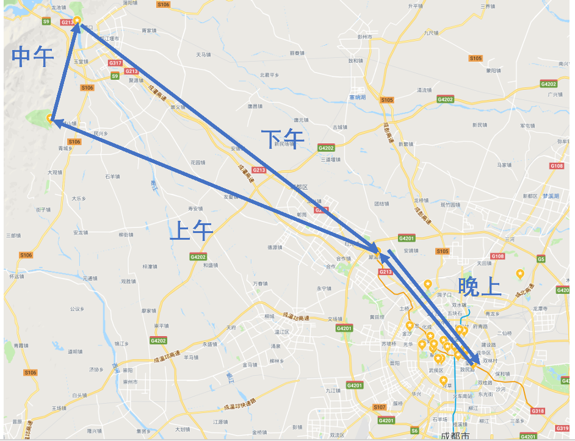
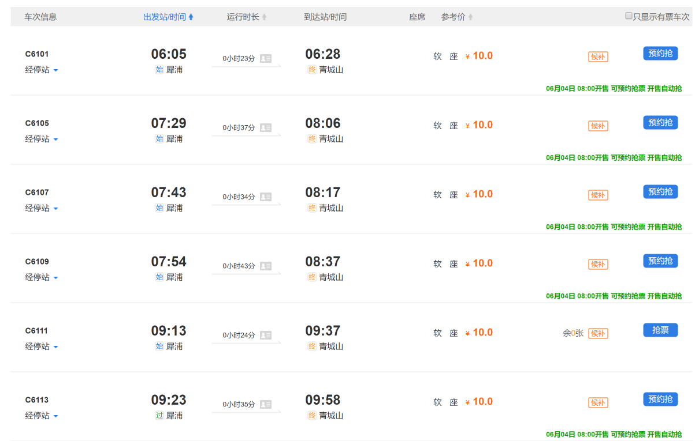
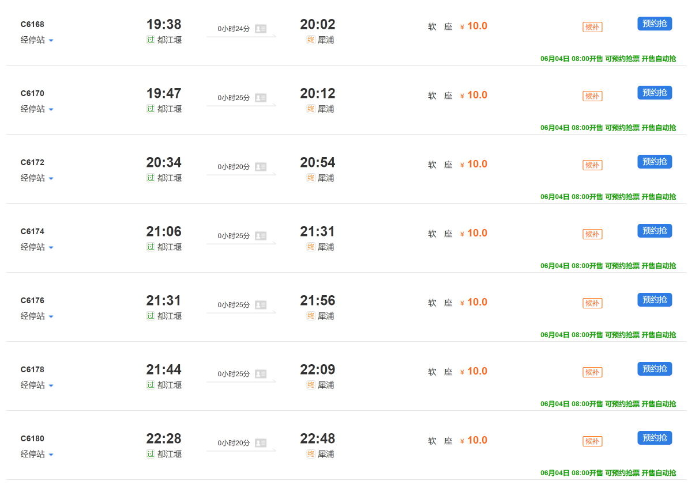
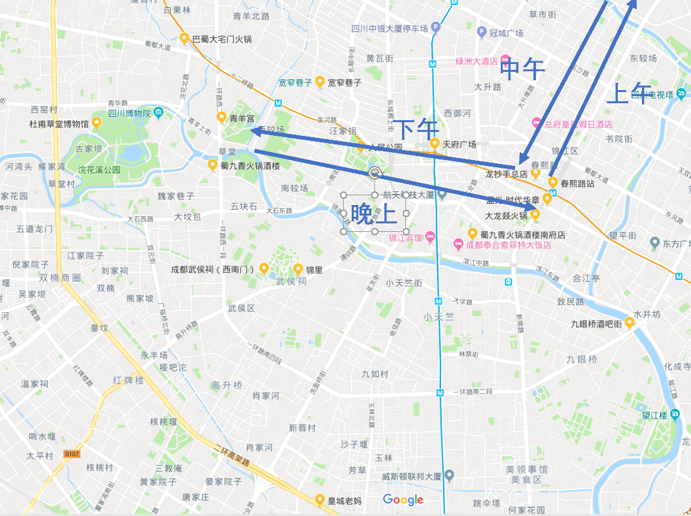

行程期间
6月7日01：25到达，2：00机场会合，乘坐接机车前往酒店，半个小时车程。
6月9日21：40离开。
入住酒店
成都缘熙酒店公寓(春熙路太古里店)
地址：下东大街2号蓝光时代华章6楼（从塞家酒店前台位置进入电梯）
6月7日凌晨入住，6月9日退房，共三晚（无早）。
天气
周五天气不错，周六周日可能会下雨。(待更新)

关键词
景点
成都大熊猫繁育研究基地 / 锦里 / 武侯祠 / 宽窄巷子 / 杜甫草堂 / 九眼桥 / 成都人民公园 / 文殊院 / 天府广场 / 文化公园-青羊宫 / 金沙遗址博物馆 / 成都欢乐谷 / 青城山 / 都江堰
美食
火锅
蜀九香火锅酒楼 / 大龙燚火锅 / 巴蜀大宅门火锅 / 皇城老妈
川菜
饕林餐厅 / 成都吃客 / 青龙正街 / 红杏 / 银杏 / 文杏
小吃
龙抄手 / 洞子口张老二凉粉
酒吧
九眼桥酒吧街 / 成都兰桂坊酒吧街
地图

Plan A：悠闲
Day 1 (6月7日)

上午
地铁前往宽窄巷子站，吃小吃、采耳、体验清朝古街道。
中午
步行前往附近的奎星楼街觅食。
下午
前往武侯祠、锦里。
Day 2 (6月8日)

上午
前往大熊猫基地
中午
回市内吃饭。
下午
游玩天府广场、人民公园
晚上
九眼桥喝酒
Day 3 (6月9日)

上午
退房，前往金沙遗址。
中午
杜甫草堂附近吃饭
下午
杜甫草堂、青羊宫、春熙路附近游玩
8：00左右打车前往双流国际机场。
Plan B：紧凑
Day 1 (6月7日)

上午
（地铁）游玩天府广场、成都博物馆、人民公园。
中午
（步行）宽窄巷子附近吃饭、游玩。
下午
（公交/地铁）前往武侯祠、锦里。
晚上
（地铁）九眼桥喝酒。
Day 2 (6月8日)

上午
地铁二号线前往犀浦（40分钟），高铁前往青城山(30-40分钟)。

中午
乘坐都江堰101路前往都江堰（50分钟）。
傍晚
从都江堰坐高铁回犀浦（30分钟）

Day 3 (6月9日)

上午
打车前往大熊猫基地。
中（下）午
回市内找地方吃饭，视时间去想去的地方，如文殊院、杜甫草堂。
晚上
春熙路附近吃饭，8点左右打车前往机场。